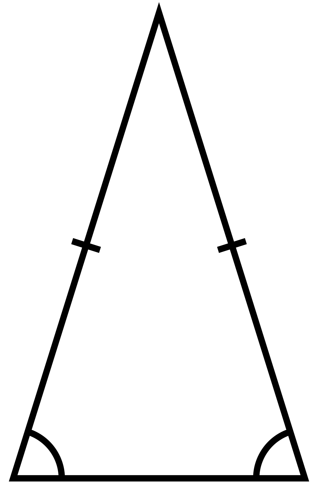

Triángulo Isósceles
En geometría, un triángulo isósceles es un triángulo que tiene dos lados de igual longitud. Al ángulo formado por lados de igual longitud se le denomina ángulo en el vértice y al lado opuesto a él, lado base.
Terminología, Clasificación y Ejemplos
"Isosceles" es una composición (lingüística), a partir de los términos griegos "isos" (igual) y "skelos" (pierna). La misma palabra se usa, por ejemplo, para el trapecio isósceles, que tiene dos lados iguales. Un triángulo que no es isósceles (tiene tres lados desiguales) se llama escaleno.
- En un triángulo isósceles que tiene exactamente dos lados iguales, los lados iguales se llaman patas y el tercer lado se llama base. El ángulo incluido por las patas se denomina ángulo del vértice y los ángulos que tienen la base como uno de sus lados se llaman ángulos de la base (Jacobs, 1974). El vértice opuesto a la base se llama ápice.
- Euclides definió el triángulo isósceles como uno que tiene exactamente dos lados iguales (Heath, 1956, p. 187, Definition 20), pero los tratamientos modernos prefieren definirlos como teniendo al menos dos lados iguales, lo que hace que los "triángulos equiláteros" (con tres lados iguales) sean un caso especial de triángulos isósceles.(Stahl, 2003, p. 37) En el caso del triángulo equilátero, dado que todos los lados son iguales, cualquier lado se puede llamar la base, si es necesario, y el término pata no se usa generalmente.

- Si el triángulo isósceles es obtuso, recto o agudo, depende del ángulo del vértice. En Geometría euclidiana, los ángulos de la base no pueden ser obtusos (más de 90°) o rectos (igual a 90°), porque sus medidas sumarían al menos 180°, el total de todos los ángulos en cualquier triángulo euclidiano. De aquí se deduce que un triángulo es obtuso o recto si y solo si uno de sus ángulos es obtuso o recto, respectivamente, y un triángulo isósceles es obtuso, recto o agudo si y solo si su ángulo de vértice es respectivamente obtuso, recto o agudo.
- Además del triángulo isósceles rectángulo, se han estudiado otras formas específicas de triángulos isósceles. Estos incluyen el triángulo de Calabi (un triángulo con tres cuadrados inscritos congruentes), el triángulo áureo y el gnomon áureo (dos triángulos isósceles cuyos lados y la base están en la relación del número áureo), y el triángulo 30-30-120 del teselado triangular triaquis.
- Cinco sólidos de Catalan (triaquistetraedro, triaquisoctaedro, tetraquishexaedro, pentaquisdodecaedro y triaquisicosaedro), tienen caras que son triángulos isósceles.
Características |
| Lados |
3 |
| Vértices |
3 |
| Símbolo de Schläfli |
( ) ? { } |
| Grupo de simetría |
Dih2, [ ], (*), orden 2 |